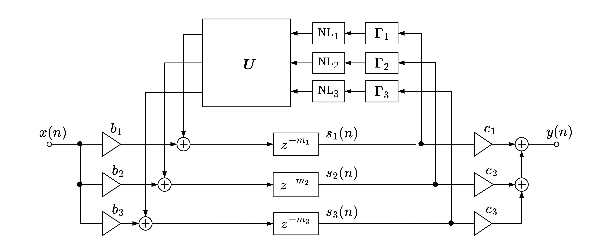

Structure of the Nonlinear FDN

Proposed approach: the nonlinear operations \(f_i\) are placed in the feedback loop of an FDN. In this configuration, the output of the nonlinearity feeds the orthogonal matrix \(\mathbf{U}\), which distributes it across the FDN channels, generating distinct sound textures depending on the chosen FDN parameters.
Audio Examples
Website vibe-coded with Github Copilot (Mostly with GTP-5.3-Codex) .